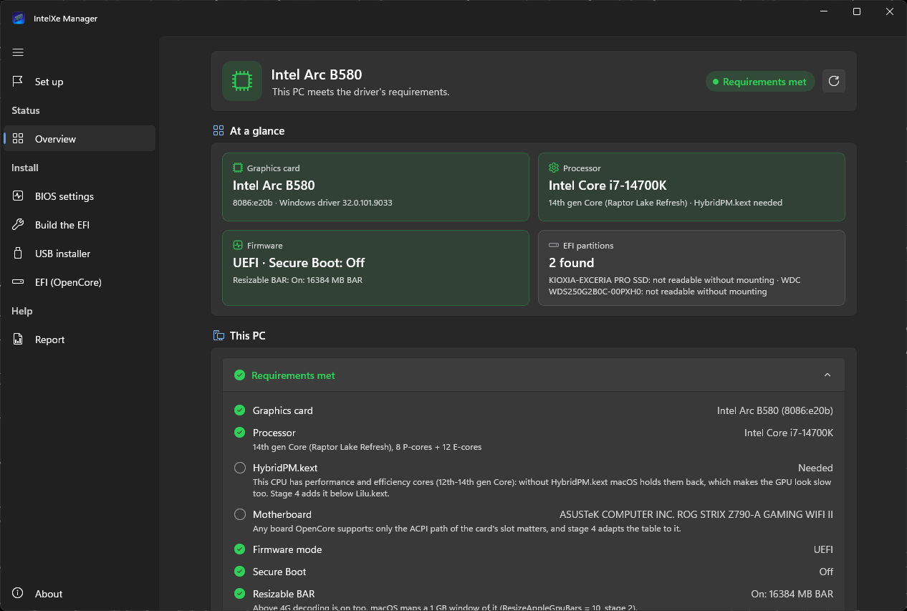
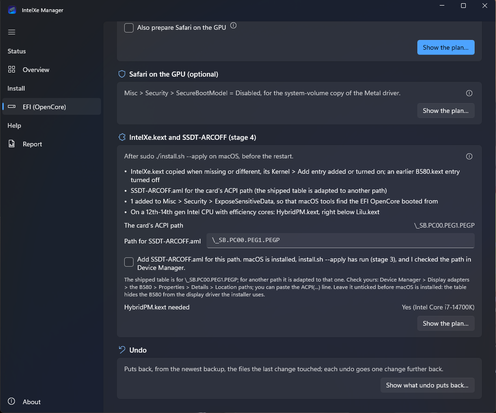
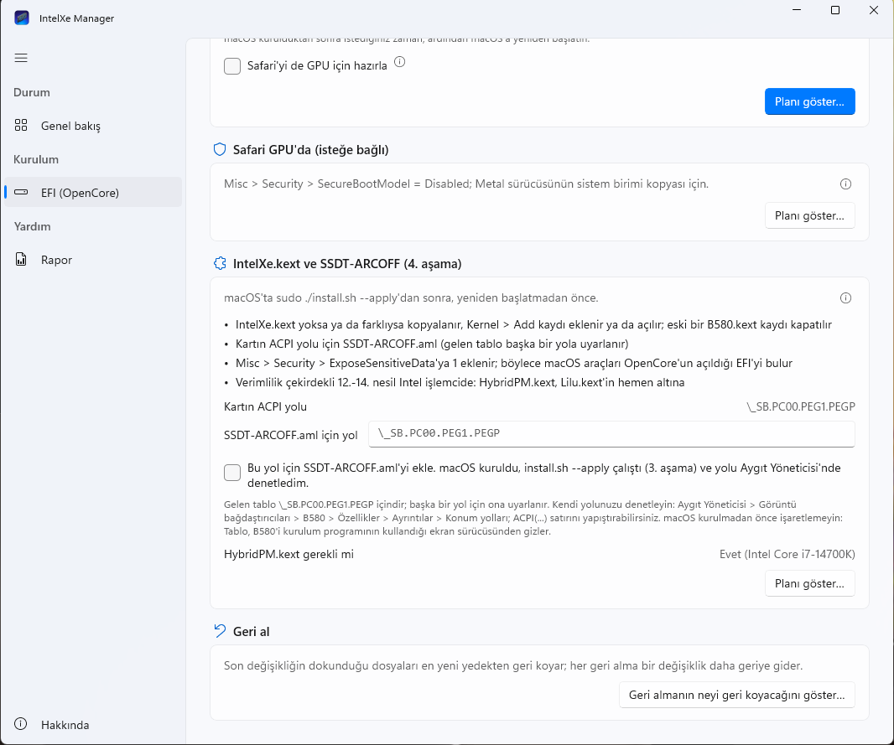
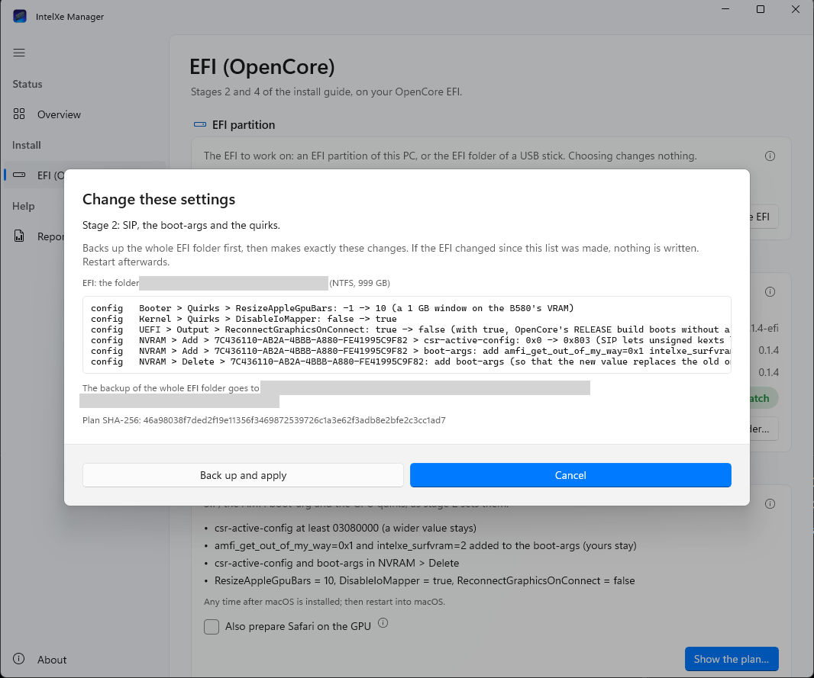

InstallationKurulum
From WindowsWindows'tan
Stages 2 and 4 change the OpenCore EFI. You can make them from Windows. The recommended way is IntelXe Manager for Windows, an app that shows each plan before it changes anything. The script IntelXe-EFI.ps1 in the -efi.zip makes the same changes. Stage 3, the driver itself, is always installed on macOS. No macOS on this PC yet? The app's Set up pages go the whole way: The Windows app, step by step.2. ve 4. aşamalar OpenCore EFI'sini değiştirir. Bunları Windows'tan da yapabilirsiniz. Önerilen yol Windows için IntelXe Manager: bir şeyi değiştirmeden önce her planı gösteren bir uygulama. -efi.zip'teki IntelXe-EFI.ps1 betiği de aynı değişiklikleri yapar. 3. aşama, yani sürücünün kendisi, her zaman macOS'ta kurulur. Bilgisayarda henüz macOS yok mu? Uygulamanın Kurulum sayfaları Windows'tan başlayıp bütün yolu gösterir: Windows uygulamasıyla adım adım.
- You needGerekenler
- macOS installed on the PC (stage 1);
IntelXeManager-0.1.6-win-x64.zipandintel-gpu-macos-driver-0.1.6-efi.zip; Windows 10 (2004 or later) or 11, x64; administrator rights only for an EFI partitionBilgisayarda kurulu bir macOS (1. aşama);IntelXeManager-0.1.6-win-x64.zipveintel-gpu-macos-driver-0.1.6-efi.zip; Windows 10 (2004 ya da sonrası) veya 11, x64; yönetici hakları (yalnızca bir EFI bölümü için) - TakesSüre
- Stage 2 any time after macOS is installed, then reboot into macOS; stage 3 on macOS; stage 4 before macOS starts again, then start macOS.2. aşama macOS kurulduktan sonra istediğiniz zaman yapılır, ardından macOS'u açarsınız; 3. aşama macOS'ta yapılır; 4. aşama macOS yeniden açılmadan önce yapılır, ardından macOS'u açarsınız.
- ResultSonuç
- The driver's entries in the EFI you chose, the whole EFI folder backed up first, every change undoable; after stage 4 the desktop is accelerated.Sürücünün kayıtları seçtiğiniz EFI'ye eklenir; önce EFI klasörünün tamamı yedeklenir ve her değişiklik geri alınabilir. 4. aşamadan sonra masaüstü hızlandırmalı çalışır.
What the app and the script change
Neither builds an EFI. You keep the one you made with Dortania's guide. They change only what the driver needs and leave the rest of config.plist as it is (key order, comments, layout). Both read the same rules as efi.sh on macOS, efi-rules.json. Both back up the whole EFI folder in the same place before a change, and each undoes the other's changes.
Uygulama ve betik neyi değiştirir
İkisi de EFI oluşturmaz: Dortania'nın rehberiyle hazırladığınız EFI'yi kullanmaya devam edersiniz. İkisi de yalnızca sürücünün ihtiyaç duyduğu yerleri değiştirir, config.plist'in geri kalanını (anahtar sırası, yorumlar, düzen) olduğu gibi bırakır. İkisi de macOS'taki efi.sh ile aynı kuralları, yani efi-rules.json'u okur. Bir değişiklikten önce EFI klasörünün tamamını aynı yere yedekler; biri, ötekinin yaptığı değişikliği geri alabilir.
IntelXe Manager for WindowsWindows için IntelXe Manager
- Download
IntelXeManager-0.1.6-win-x64.zipandintel-gpu-macos-driver-0.1.6-efi.zipfrom the release page. - Check the app's zip before you unpack it. In PowerShell, in the download folder:
Get-FileHash .\IntelXeManager-0.1.6-win-x64.zip -Algorithm SHA256Its SHA-256 must be the one listed for it in
intel-gpu-macos-driver-0.1.6.sha256on the release page. - Unpack both zips into the same folder (right-click > Extract All).
- Start
IntelXeManager.exeinIntelXeManager-0.1.6-win-x64. "Windows protected your PC"? Press More info > Run anyway (why).
More about these steps
- Nothing is installed. The folder carries .NET, the Windows App SDK and the EFI builder's Python (about 216 MB).
- The app runs on Windows 10 (2004 or later) or 11, x64.
- The app finds the unpacked
-efi.zipnext to its own folder. Choose the -efi.zip... on its EFI page takes the zip itself.
- Sürüm sayfasından
IntelXeManager-0.1.6-win-x64.zipveintel-gpu-macos-driver-0.1.6-efi.zipdosyalarını indirin. - Açmadan önce uygulamanın zip'ini denetleyin. İndirme klasöründe, PowerShell'de:
Get-FileHash .\IntelXeManager-0.1.6-win-x64.zip -Algorithm SHA256Çıkan SHA-256, sürüm sayfasındaki
intel-gpu-macos-driver-0.1.6.sha256listesinde bu dosya için yazan değerle aynı olmalı. - İki zip'i de aynı klasöre çıkarın (sağ tık > Tümünü Ayıkla).
IntelXeManager-0.1.6-win-x64içindekiIntelXeManager.exe'yi başlatın. "Windows bilgisayarınızı korudu" uyarısı mı çıktı? Ek bilgi > Yine de çalıştır'a basın (neden).
Bu adımlar hakkında ayrıntı
- Kurulacak bir şey yok. .NET, Windows App SDK ve EFI oluşturucunun Python'u klasörün içinde (yaklaşık 216 MB).
- Uygulama Windows 10'da (2004 ya da sonrası) veya 11'de, x64'te çalışır.
- Uygulama açılmış
-efi.zip'i kendi klasörünün yanında bulur. EFI sayfasındaki -efi.zip dosyasını seç... ile zip'in kendisini de seçebilirsiniz.
Unknown publisher. The app is not signed with a code-signing certificate. So SmartScreen may stop its first start with "Windows protected your PC" (More info > Run anyway). The administrator prompt shows "Unknown publisher". That only says Windows cannot tell who made it. What tells you the zip is the release's is the SHA-256 of step 2. Do not run a copy from anywhere but the release page.
Bilinmeyen yayımcı. Uygulama bir kod imzalama sertifikasıyla imzalanmadı. Bu yüzden SmartScreen ilk açılışı "Windows bilgisayarınızı korudu" uyarısıyla durdurabilir (Ek bilgi > Yine de çalıştır). Yönetici izni penceresinde de "Bilinmeyen yayımcı" yazar. Bu yalnızca Windows'un uygulamayı kimin yaptığını bilemediği anlamına gelir. Zip'in sürümdeki dosya olduğunu 2. adımdaki SHA-256 gösterir. Sürüm sayfası dışında bir yerden gelen kopyayı çalıştırmayın.
Why the SHA-256 and not the warning
The project has no code-signing certificate. A changed copy would look the same to Windows. The list of SHA-256 values is signed with the project's key (.sha256.sig). Windows has no tool for that signature; IntelXe Manager on macOS checks it.
Neden uyarı değil de SHA-256
Projenin bir kod imzalama sertifikası yok. Değiştirilmiş bir kopya da Windows'a aynı görünür. SHA-256 listesi projenin anahtarıyla imzalı (.sha256.sig). Windows'ta bu imzayı denetleyecek bir araç yok; macOS'taki IntelXe Manager denetler.


Set up: from this PC to macOS (experimental)Kurulum: bu bilgisayardan macOS'a (deneysel)
Set up is the app's first page. It shows the way from this PC to an installed macOS as a list of steps. Each step is marked done, next or blocked. Every step with the app's own words: The Windows app, step by step.
These pages are new. Stage 1 by hand (Install macOS) is the tested way.
The pages of Set up
- BIOS settings lists this board maker's menu names for the firmware settings of stage 1. Each is marked done, to do or "cannot tell from Windows". It changes no setting.
- Build the EFI makes a stage-1 OpenCore EFI for this PC. OpCore Simplify makes it, at a pinned commit, from pinned downloads. Stage 2 is already in it, and
ocvalidatechecks it. The scan keeps only the DSDT, SSDT, APIC and DMAR tables. The generated serial numbers stay masked. - USB installer downloads macOS's recovery from Apple's servers and checks it against Apple's chunklist. Then it writes it, with an EFI, to a USB stick.
Kurulum, uygulamanın ilk sayfası. Bu bilgisayardan kurulu bir macOS'a giden yolu adım adım gösterir. Her adım bitti, sıradaki ya da engelli olarak işaretlidir. Her adım, uygulamadaki ifadeleriyle: Windows uygulamasıyla adım adım.
Bu sayfalar yeni. Denenmiş yol, 1. aşamayı elle yapmak (macOS'u kurmak).
Kurulum'un sayfaları
- BIOS ayarları, 1. aşamanın firmware ayarlarını bu anakart üreticisinin menü adlarıyla listeler. Her biri bitti, yapılacak ya da "Windows'tan anlaşılamıyor" olarak işaretlidir. Hiçbir ayarı değiştirmez.
- EFI'yi oluştur, bu bilgisayar için 1. aşamanın OpenCore EFI'sini oluşturur. Bunu sabitlenmiş bir commit'teki OpCore Simplify, sabitlenmiş indirmelerden yapar. 2. aşama bu EFI'de zaten yapılmıştır ve EFI
ocvalidateile denetlenir. Tarama yalnızca DSDT, SSDT, APIC ve DMAR tablolarını saklar. Üretilen seri numaraları maskeli kalır. - USB kurulum belleği, macOS'un recovery görüntüsünü Apple'ın sunucularından indirir ve Apple'ın chunklist'ine göre denetler. Sonra onu bir EFI ile birlikte USB belleğe yazar.
Administrator rights: only for disksYönetici hakları: yalnızca diskler için
The app runs with your rights; its Overview never asks for more. Windows asks for administrator rights only when the app works on a disk:
- an EFI partition: once to read the EFI, once for a plan, once for the change;
- Build the EFI, which scans the PC;
- writing a USB stick;
- a report with Boot logs, which reads the EFI partitions.
An EFI folder on a USB stick, or a copy of one, needs no prompt at all. If the app asks for administrator rights at any other time, say no and open an issue.
What runs with administrator rights
Windows lets only administrators mount an EFI partition. So for each reading, plan and change of a partition the app starts a helper of its own, IntelXeManager.exe --efi-helper, with administrator rights. The prompt names IntelXeManager.exe and an unknown publisher. The helper opens no window. It mounts the partition at a free drive letter, does that one thing and unmounts it again. The same helper scans the PC for Build the EFI (--efi-helper sniff). Writing a USB stick uses --stick-helper for the installer stick and --probe-helper for the probe stick.
Uygulama sizin haklarınızla çalışır; Genel bakış sayfası hiçbir zaman daha fazlasını istemez. Windows yalnızca uygulama bir diskle çalışırken yönetici izni ister:
- bir EFI bölümü: EFI'yi okumak için bir kez, plan için bir kez, değişiklik için bir kez;
- bilgisayarı tarayan EFI'yi oluştur;
- bir USB belleğe yazmak;
- EFI bölümlerini okuyan, Açılış günlükleri açık bir rapor.
USB bellekteki bir EFI klasörü ya da bir EFI kopyası için hiç izin istenmez. Uygulama başka bir anda yönetici hakkı isterse hayır deyin ve bir issue açın.
Yönetici haklarıyla ne çalışır
Windows, EFI bölümlerini yalnızca yöneticilerin bağlamasına izin verir. Bu yüzden uygulama bir bölümü her okuduğunda, planladığında ve değiştirdiğinde kendi yardımcısını, IntelXeManager.exe --efi-helper'ı yönetici haklarıyla başlatır. İzin penceresinde IntelXeManager.exe ve bilinmeyen bir yayımcı görünür. Yardımcı pencere açmaz. Bölümü boş bir sürücü harfine bağlar, o tek işi yapar ve bölümü yeniden ayırır. Aynı yardımcı EFI'yi oluştur için bilgisayarı da tarar (--efi-helper sniff). USB belleğe yazarken kurulum belleği için --stick-helper, tarama belleği için --probe-helper çalışır.
Stages 2 and 4 with the appUygulamayla 2. ve 4. aşamalar
- Keep your USB stick with a working EFI at hand (why).
- On the EFI (OpenCore) page, choose the EFI: an EFI partition of the PC, or Use an EFI folder... for a USB stick's
EFIfolder. Read the EFI shows what each stage would still change. - Stage 2, any time after macOS is installed: under Settings (stage 2), press Show the plan... and read it. Then press Back up and apply. Reboot into macOS.
- Stage 3, on macOS: install the driver (From macOS). Do not start macOS again before stage 4.
- Stage 4, under IntelXe.kext and SSDT-ARCOFF (stage 4): check the card's ACPI path. The app fills it in from Device Manager when Windows runs on the PC with the card; correct it if needed. Tick that macOS is installed, stage 3 is done and you checked the path. Then Show the plan... and Back up and apply.
- Start macOS. The desktop should now be accelerated: check it.
Want Safari on the GPU? Tick Also prepare Safari on the GPU in stage 2, or use the Safari on the GPU section later. Undo puts back, from the newest backup, the files the last change touched.
PC does not start? Boot logging (for troubleshooting) writes OpenCore's log and the saved panics into the EFI's root, for a report. Turn it off again afterwards (Boot logging). Something else went wrong? The app's Report page runs tools/report/collect-windows.ps1 (shipped with it).
More about these steps
- The list of EFI partitions names each one's disk and whether Windows booted from it.
- Stage 2 makes the same items 1 to 5 as the script (its stage 2). Also prepare Safari on the GPU sets
SecureBootModelin the same change. - Stage 4 adds
IntelXe.kext, andHybridPM.kexton a 12th-14th gen hybrid CPU. It addsSSDT-ARCOFF.amlonly when you confirm the card's ACPI path. - Staying in macOS after stage 3? Make stage 4 there instead: From macOS, stage 4.
- Show the plan... opens the plan: its steps, its notes, where the backup goes and the plan's SHA-256.
- Back up and apply backs up the whole EFI folder and makes exactly that plan. Its default button is Cancel. If the EFI changed since the plan was shown, nothing is written.
- Plans and results are shown in English or Turkish, as the app's language.
- Çalışan bir EFI'si olan USB belleğinizi elinizin altında tutun (neden).
- EFI (OpenCore) sayfasında EFI'yi seçin: bilgisayarın EFI bölümlerinden biri ya da bir USB belleğin
EFIklasörü için Bir EFI klasörü kullan.... EFI'yi oku, her aşamada değiştirilecek ne kaldığını gösterir. - 2. aşama, macOS kurulduktan sonra istediğiniz zaman: Ayarlar (2. aşama) altında Planı göster...'e basın ve planı okuyun. Sonra Yedekle ve uygula'ya basın. Bilgisayarı yeniden başlatıp macOS'u açın.
- 3. aşama, macOS'ta: sürücüyü kurun (macOS'tan). 4. aşamadan önce macOS'u yeniden açmayın.
- 4. aşama, IntelXe.kext ve SSDT-ARCOFF (4. aşama) altında: kartın ACPI yolunu denetleyin. Windows kartın takılı olduğu bilgisayarda çalışıyorsa uygulama yolu Aygıt Yöneticisi'nden okuyup doldurur; gerekirse düzeltin. macOS'un kurulu olduğunu, 3. aşamanın bittiğini ve yolu denetlediğinizi onaylayan kutuyu işaretleyin. Sonra Planı göster... ve Yedekle ve uygula.
- macOS'u açın. Masaüstü artık hızlandırmalı çalışmalı: kontrol edin.
Safari'yi GPU'da mı istiyorsunuz? 2. aşamada Safari'yi de GPU için hazırla'yı işaretleyin ya da daha sonra Safari GPU'da bölümünü kullanın. Geri al, son değişikliğin dokunduğu dosyaları en yeni yedekten geri yükler.
Bilgisayar açılmıyor mu? Açılış günlüğü (sorun giderme için), OpenCore'un günlüğünü ve kaydedilen panikleri rapora eklenmek üzere EFI'nin kök klasörüne yazar. İş bitince yeniden kapatın (Açılış günlüğü). Başka bir şey mi ters gitti? Uygulamanın Rapor sayfası, uygulamayla birlikte gelen tools/report/collect-windows.ps1'i çalıştırır.
Bu adımlar hakkında ayrıntı
- EFI bölümlerinin listesi her bölümün diskini ve Windows'un o bölümden açılıp açılmadığını gösterir.
- 2. aşama, betiğin yaptığı 1-5. maddelerin aynısıdır (betikle 2. aşama). Safari'yi de GPU için hazırla,
SecureBootModel'i aynı değişiklikte ayarlar. - 4. aşama
IntelXe.kext'i, 12.-14. nesil hibrit işlemcideHybridPM.kext'i de ekler.SSDT-ARCOFF.aml'i yalnızca kartın ACPI yolunu onayladığınızda ekler. - 3. aşamadan sonra macOS'ta mı kalıyorsunuz? 4. aşamayı orada yapın: macOS'tan, 4. aşama.
- Planı göster... planı açar: adımlarını, notlarını, yedeğin nereye alınacağını ve planın SHA-256'sını gösterir.
- Yedekle ve uygula, EFI klasörünün tamamını yedekler ve planı tam olarak gösterildiği gibi uygular. Varsayılan düğme Vazgeç'tir. Plan gösterildikten sonra EFI değiştiyse hiçbir şey yazılmaz.
- Planlar ve sonuçlar uygulamanın diline göre Türkçe ya da İngilizce gösterilir.







Without the app: the script IntelXe-EFI.ps1Uygulamasız: IntelXe-EFI.ps1 betiği
The scripted way, for the command line, for scripting, or when the app cannot run. IntelXe-EFI.ps1 comes in the -efi.zip. It runs in Windows PowerShell 5.1 (part of Windows 10 and 11) or PowerShell 7, and nothing needs to be installed. The zip's README-Windows.md has every detail.
It has a window and a command line. Its two changes are Settings: plan / apply (stage 2) and Driver: plan / apply (stage 4). Every change is planned first, with a backup and an undo. Keep your USB stick with a working EFI at hand, and read each plan before you confirm it (why).
What the script changes
Like the app, it does not build an EFI. It works in an OpenCore EFI folder you point it to: a USB stick's, or the EFI partition of a disk, which it can mount. There it makes the config.plist changes and copies the files of stages 2 and 4, the same changes as efi.sh on macOS. The -efi.zip also holds efi-rules.json and the OpenCore pieces:
Betikle yapılan yol: komut satırı ve otomasyon için ya da uygulama çalışmadığında. IntelXe-EFI.ps1, -efi.zip'in içinde gelir. Windows PowerShell 5.1'de (Windows 10 ve 11'de hazır gelir) ya da PowerShell 7'de çalışır; bir şey kurmanız gerekmez. Bütün ayrıntılar zip'teki README-Windows.md'de.
Hem bir penceresi hem de bir komut satırı var. İki değişikliği Settings: plan / apply (2. aşama) ve Driver: plan / apply (4. aşama). Her değişiklik önce planlanır, öncesinde yedek alınır ve geri alınabilir. Çalışan bir EFI'si olan USB belleğinizi elinizin altında tutun ve her planı onaylamadan önce okuyun (neden).
Betik neyi değiştirir
Uygulama gibi o da EFI oluşturmaz. Gösterdiğiniz bir OpenCore EFI klasöründe çalışır: bir USB bellekteki ya da betiğin bağlayabildiği bir disk EFI bölümündeki. Orada 2. ve 4. aşamaların config.plist değişikliklerini yapar ve dosyalarını kopyalar; yani efi.sh'in macOS'ta yaptığının aynısını yapar. -efi.zip'te efi-rules.json ve OpenCore parçaları da bulunur:
The script: starting itBetik: başlatma
- Unpack the
-efi.zip(right-click > Extract All). - Right-click
IntelXe-EFI.ps1> Run with PowerShell. A window opens.Windows refuses to run it?
If it says "running scripts is disabled", start it from a PowerShell window instead:
cd $HOME\Downloads\intel-gpu-macos-driver-0.1.6-efi powershell -ExecutionPolicy Bypass -File .\IntelXe-EFI.ps1-ExecutionPolicy Bypassapplies to that one run only. A file downloaded with a browser may also needUnblock-File .\IntelXe-EFI.ps1once.
Administrator rights are needed only for an EFI partition: Windows lets only administrators mount it and write to it. A USB stick or a copy of an EFI folder works without them. The window's Restart as administrator button starts it again elevated, with your folders filled in.
-efi.zip'i bir klasöre çıkarın (sağ tık > Tümünü Ayıkla).IntelXe-EFI.ps1'e sağ tıklayıp PowerShell ile Çalıştır'ı seçin. Bir pencere açılır.Windows betiği çalıştırmıyor mu?
"running scripts is disabled" diyorsa betiği bir PowerShell penceresinden başlatın:
cd $HOME\Downloads\intel-gpu-macos-driver-0.1.6-efi powershell -ExecutionPolicy Bypass -File .\IntelXe-EFI.ps1-ExecutionPolicy Bypassyalnızca o çalıştırma için geçerlidir. Tarayıcıyla indirilen bir dosya için bir kezUnblock-File .\IntelXe-EFI.ps1de gerekebilir.
Yönetici hakları yalnızca bir EFI bölümü için gerekir: Windows o bölümü yalnızca yöneticilerin bağlamasına ve ona yazmasına izin veriyor. USB bellek ya da bir EFI klasörünün kopyası için yönetici hakları gerekmez. Penceredeki Restart as administrator düğmesi aracı yönetici haklarıyla yeniden başlatır; seçtiğiniz klasörler dolu kalır.
The script: the EFI folder and the backupsBetik: EFI klasörü ve yedekler
- EFI folder. For a USB stick, Browse... to its
EFIfolder, e.g.E:\EFI: the one withOCandBOOTin it. For the EFI partition of a disk, press Mount EFI partition... (administrator) and choose the partition. It fills inS:\EFI. Unmount EFI partition takes the letter away again. - Package folder is filled in when the script sits in the unpacked
-efi.zip. - Backups: leave it empty.
Mounting, and where the backups go
Mount EFI partition... lists the EFI partitions of the PC with their disk's name and size. It mounts the one you choose with mountvol; nothing is written to it.
Before each change the whole EFI folder is copied to a numbered, dated folder. For a folder, that is next to the EFI folder (E:\IntelXe-EFI-backups\...). For an EFI partition it is %LOCALAPPDATA%\intel-gpu-macos-driver\efi-backups\: the partition is less than 2 GB, and its space is for booting. Undo looks in the same place.
- EFI folder. USB bellek için Browse... ile belleğin
EFIklasörünü seçin, örneğinE:\EFI: içindeOCveBOOTolan klasör. Bir diskin EFI bölümü için Mount EFI partition...'a basın (yönetici hakları gerekir) ve bölümü seçin. AlanaS:\EFIyazılır. Unmount EFI partition sürücü harfini yeniden kaldırır. - Package folder, betik açılmış
-efi.zipklasörünün içindeyse kendiliğinden dolar. - Backups: boş bırakın.
Bölümü bağlamak ve yedeklerin yeri
Mount EFI partition... bilgisayardaki EFI bölümlerini disklerinin adı ve boyutuyla listeler. Seçtiğinizi mountvol ile bağlar; bölüme hiçbir şey yazılmaz.
Her değişiklikten önce EFI klasörünün tamamı numaralı ve tarihli bir klasöre kopyalanır. Bir klasör için bu, EFI klasörünün yanıdır (E:\IntelXe-EFI-backups\...). EFI bölümü içinse %LOCALAPPDATA%\intel-gpu-macos-driver\efi-backups\: bölüm 2 GB'tan küçüktür ve alanı açılış için ayrılmıştır. Geri alma da yedekleri aynı yerde arar.
The script, stage 2: the settingsBetik, 2. aşama: ayarlar
Any time after macOS is installed:
- Press Settings: plan. It shows what changes.
- Press Settings: apply.... It shows the plan again and asks. Then it backs up and writes.
- Reboot into macOS. The screen still runs on the firmware output.
Safari on the GPU is a change of its own: -Plan safari on the command line (or settings-safari for both at once), the Windows app's Safari on the GPU section, or the macOS app later (Optional extras).
What Settings changes
It makes items 1 to 5 of stage 2:
csr-active-configat least03080000(a wider value stays);amfi_get_out_of_my_way=0x1andintelxe_surfvram=2added to the boot-args (yours stay);csr-active-configandboot-argsinNVRAM > Delete;ResizeAppleGpuBars = 10,DisableIoMapper = true,ReconnectGraphicsOnConnect = false.
It keeps the rest of config.plist as it is and can undo the change. Safari on the GPU is item 6, SecureBootModel.
macOS kurulduktan sonra istediğiniz zaman:
- Settings: plan'a basın. Nelerin değişeceğini gösterir.
- Settings: apply...'a basın. Planı yeniden gösterip onayınızı ister. Sonra yedek alıp yazar.
- macOS'u açın. Ekran hâlâ kartın UEFI çıktısıyla çalışır.
GPU'da Safari ayrı bir değişikliktir: komut satırında -Plan safari (ikisini birden yapmak için settings-safari), Windows uygulamasının Safari GPU'da bölümü ya da daha sonra macOS uygulaması (İsteğe bağlı ekler).
Settings neyi değiştirir
2. aşamanın 1-5. maddelerini uygular:
csr-active-configen az03080000olur (daha geniş bir değer varsa korunur);- boot-args'a
amfi_get_out_of_my_way=0x1veintelxe_surfvram=2eklenir (sizin eklediklerinize dokunulmaz); csr-active-configveboot-args,NVRAM > Delete'e eklenir;ResizeAppleGpuBars = 10,DisableIoMapper = true,ReconnectGraphicsOnConnect = false.
config.plist'in geri kalanını olduğu gibi bırakır ve değişikliği geri alabilir. GPU'da Safari 6. maddedir: SecureBootModel.
Stage 3: the driver, on macOS3. aşama: sürücü (macOS'ta)
In macOS on the PC, install the driver with IntelXe Manager or in Terminal: From macOS, steps 1 to 4 of the app or 3.2 in Terminal.
Do not start macOS again before stage 4: shut it down and make stage 4 below.
Staying in macOS instead? Let the app's EFI page or efi.sh make stage 4 there (From macOS, stage 4). That way also reads your card's ACPI path itself.
Bilgisayardaki macOS'ta sürücüyü IntelXe Manager'la ya da Terminal'de kurun: macOS'tan sayfasında uygulama için 1-4. adımlar, Terminal için 3.2.
4. aşamadan önce macOS'u yeniden açmayın: macOS'u kapatıp aşağıdaki 4. aşamayı yapın.
macOS'ta mı kalıyorsunuz? 4. aşamayı orada uygulamanın EFI sayfasına veya efi.sh'e yaptırın (macOS'tan, 4. aşama). Bu yol kartınızın ACPI yolunu da kendisi okur.
The script, stage 4: IntelXe.kext, SSDT-ARCOFF and HybridPMBetik, 4. aşama: IntelXe.kext, SSDT-ARCOFF ve HybridPM
After sudo ./install.sh --apply on macOS, before macOS starts again:
- Run the script on the PC that boots the EFI. It adds
HybridPM.kextby the CPU of the PC it runs on. - For SSDT-ARCOFF.aml, tick its box and give your card's ACPI path. Read from Windows reads it when Windows runs on the PC with the card.
The path from Device Manager
In Device Manager > Display adapters > the B580 (or "Microsoft Basic Display Adapter") > Properties > Details > Location paths, the line
ACPI(_SB_)#ACPI(PC00)#ACPI(PEG1)#ACPI(PEGP)#PCI(0100)#PCI(0000)means\_SB.PC00.PEG1.PEGP. You can paste the line as it is. More on the path: The EFI by hand. - Press Driver: plan, then Driver: apply....
- Start macOS. The desktop should now be accelerated: check it.
What Driver changes
- It copies
IntelXe.kext(when missing or different) and adds or enables itsKernel > Addentry. It turns off an earlierB580.kextentry. - It adds 1 to
Misc > Security > ExposeSensitiveData, so that macOS tools find the EFI OpenCore booted from. - On a 12th-14th gen Intel CPU with efficiency cores (Alder Lake / Raptor Lake; not Core Ultra, not the desktop models with P-cores only), it copies
HybridPM.kext. It adds or enables its entry right belowLilu.kext's, asefi.shdoes: it is a Lilu plugin. WithoutLilu.kextin the EFI it adds nothing and says so. - It adds
SSDT-ARCOFF.amlonly with its box ticked: Windows cannot check the path the wayefi.shdoes on macOS. - For a path other than the shipped table's, it adapts a copy of the table, as
efi.shdoes. The plan says "the package's table adapted to this card's port". Your ownSSDT-ARCOFF.amlthat names the card's path stays. - Each change comes with a backup and an undo.
macOS'ta sudo ./install.sh --apply'dan sonra, macOS yeniden açılmadan önce:
- Betiği, bu EFI ile açılacak bilgisayarda çalıştırın.
HybridPM.kext'i, çalıştığı bilgisayarın işlemcisine bakarak ekler. - SSDT-ARCOFF.aml için kutusunu işaretleyin ve kartınızın ACPI yolunu yazın. Windows kartın takılı olduğu bilgisayarda çalışıyorsa Read from Windows yolu kendisi okur.
Aygıt Yöneticisi'nden yol
Aygıt Yöneticisi > Görüntü bağdaştırıcıları > B580 (ya da "Microsoft Temel Görüntü Bağdaştırıcısı") > Özellikler > Ayrıntılar > Konum yolları'ndaki
ACPI(_SB_)#ACPI(PC00)#ACPI(PEG1)#ACPI(PEGP)#PCI(0100)#PCI(0000)satırı\_SB.PC00.PEG1.PEGPdemektir. Satırı olduğu gibi yapıştırabilirsiniz. Yol hakkında ayrıntılar: EFI'yi elle düzenlemek. - Driver: plan'a, sonra Driver: apply...'a basın.
- macOS'u açın. Masaüstü artık hızlandırmalı çalışmalı: kontrol edin.
Driver neyi değiştirir
IntelXe.kext'i kopyalar (yoksa ya da farklıysa) veKernel > Addkaydını ekler ya da etkinleştirir. Eski birB580.kextkaydı varsa kapatır.Misc > Security > ExposeSensitiveDatadeğerine 1 ekler; macOS araçları OpenCore'un açıldığı EFI'yi bulabilsin diye.- Verimlilik çekirdekli 12.-14. nesil bir Intel işlemcide (Alder Lake / Raptor Lake; Core Ultra ve yalnızca P çekirdekli masaüstü modelleri hariç)
HybridPM.kext'i de kopyalar. Kaydınıefi.shgibiLilu.kext'in kaydının hemen altına ekler ya da etkinleştirir; HybridPM bir Lilu eklentisidir. EFI'deLilu.kextyoksa hiçbir şey eklemez ve bunu bildirir. SSDT-ARCOFF.aml'i yalnızca kutusu işaretliyse ekler: Windows'ta yol,efi.sh'in macOS'ta yaptığı gibi denetlenemiyor.- Yol paketteki tablonunkinden farklıysa araç,
efi.shgibi tablonun bir kopyasını bu yola uyarlar. Planda "the package's table adapted to this card's port" yazar. Kartın yolunu adıyla anan kendiSSDT-ARCOFF.aml'iniz varsa olduğu gibi kalır. - Her değişiklik yedekli ve geri alınabilir.
The script: undo, and every change is plannedBetik: geri alma ve her değişikliğin önceden planlanması
Undo last change... puts back, from the newest backup, the files that change touched. Each undo goes one change further back. The backups stay.
Edited config.plist after that change? Undo warns you: putting it back loses those edits.
What undo puts back, and how a change is checked
Undo puts back config.plist, IntelXe.kext, HybridPM.kext and SSDT-ARCOFF.aml, as far as the change touched them.
Every change is planned first and carries the plan's SHA-256. If the EFI changed between the plan you read and your confirmation, nothing is written. config.plist is edited in memory, read back and checked before it replaces the old one. A damaged package (its files differ from its SHA256SUMS) is refused.
Undo last change..., son değişikliğin dokunduğu dosyaları en yeni yedekten geri yükler. Her geri alma bir değişiklik daha geriye gider. Yedekler silinmez.
config.plist'i o değişiklikten sonra elle mi düzenlediniz? Geri alma sizi uyarır: geri yüklemek bu düzenlemeleri siler.
Geri alma neyi geri yükler, bir değişiklik nasıl denetlenir
Geri alma; config.plist, IntelXe.kext, HybridPM.kext ve SSDT-ARCOFF.aml'den değişikliğin dokunduklarını geri yükler.
Her değişiklik önce planlanır ve planın SHA-256'sını taşır. Planı okuduğunuz anla onay verdiğiniz an arasında EFI değiştiyse hiçbir şey yazılmaz. config.plist bellekte düzenlenir, eskisinin yerine yazılmadan önce yeniden okunup denetlenir. Dosyaları SHA256SUMS ile uyuşmayan (bozuk) bir paket reddedilir.
The script's command lineBetiğin komut satırı
.\IntelXe-EFI.ps1 -Status -Efi E:\EFI
.\IntelXe-EFI.ps1 -Plan settings -Efi E:\EFI # prints the plan and its SHA-256
.\IntelXe-EFI.ps1 -Apply settings -Efi E:\EFI -Expect <SHA-256>
.\IntelXe-EFI.ps1 -Plan driver -Efi E:\EFI [-CardAcpiPath '\_SB.PC00.PEG1.PEGP']
.\IntelXe-EFI.ps1 -Apply driver -Efi E:\EFI [-CardAcpiPath ...] -Expect <SHA-256>
.\IntelXe-EFI.ps1 -Plan safari -Efi E:\EFI # SecureBootModel = Disabled, for the system-volume copy
.\IntelXe-EFI.ps1 -Apply safari -Efi E:\EFI -Expect <SHA-256>
.\IntelXe-EFI.ps1 -Plan bootlog -Efi E:\EFI # boot logging, for a PC that does not start
.\IntelXe-EFI.ps1 -Apply bootlog -Efi E:\EFI -Expect <SHA-256>
.\IntelXe-EFI.ps1 -Plan bootlog-off -Efi E:\EFI # boot logging off again
.\IntelXe-EFI.ps1 -Apply bootlog-off -Efi E:\EFI -Expect <SHA-256>
.\IntelXe-EFI.ps1 -Plan undo -Efi E:\EFI
.\IntelXe-EFI.ps1 -Undo -Efi E:\EFI -Expect <SHA-256>
.\IntelXe-EFI.ps1 -ListEsp # administrator: the EFI partitions
.\IntelXe-EFI.ps1 -MountEsp '\\?\Volume{...}\' # administrator; -MountEsp system = mountvol S: /S
.\IntelXe-EFI.ps1 -UnmountEsp S:
.\IntelXe-EFI.ps1 -Help.\IntelXe-EFI.ps1 -Status -Efi E:\EFI
.\IntelXe-EFI.ps1 -Plan settings -Efi E:\EFI # planı ve SHA-256'sını yazar
.\IntelXe-EFI.ps1 -Apply settings -Efi E:\EFI -Expect <SHA-256>
.\IntelXe-EFI.ps1 -Plan driver -Efi E:\EFI [-CardAcpiPath '\_SB.PC00.PEG1.PEGP']
.\IntelXe-EFI.ps1 -Apply driver -Efi E:\EFI [-CardAcpiPath ...] -Expect <SHA-256>
.\IntelXe-EFI.ps1 -Plan safari -Efi E:\EFI # SecureBootModel = Disabled, sistem diski kopyası için
.\IntelXe-EFI.ps1 -Apply safari -Efi E:\EFI -Expect <SHA-256>
.\IntelXe-EFI.ps1 -Plan bootlog -Efi E:\EFI # açılış günlüğü, açılmayan bir bilgisayar için
.\IntelXe-EFI.ps1 -Apply bootlog -Efi E:\EFI -Expect <SHA-256>
.\IntelXe-EFI.ps1 -Plan bootlog-off -Efi E:\EFI # açılış günlüğünü yeniden kapatmak
.\IntelXe-EFI.ps1 -Apply bootlog-off -Efi E:\EFI -Expect <SHA-256>
.\IntelXe-EFI.ps1 -Plan undo -Efi E:\EFI
.\IntelXe-EFI.ps1 -Undo -Efi E:\EFI -Expect <SHA-256>
.\IntelXe-EFI.ps1 -ListEsp # yönetici: EFI bölümleri
.\IntelXe-EFI.ps1 -MountEsp '\\?\Volume{...}\' # yönetici; -MountEsp system = mountvol S: /S
.\IntelXe-EFI.ps1 -UnmountEsp S:
.\IntelXe-EFI.ps1 -Help-Package DIR (default: the script's folder) and -BackupDir DIR work with all of them. mountvol S: /S mounts the EFI partition Windows booted from. OpenCore on another disk? Use -ListEsp and -MountEsp with its volume. To edit the EFI by hand from Windows instead: mounting the EFI partition.
-Package DIR (varsayılan: betiğin klasörü) ve -BackupDir DIR bütün komutlarla kullanılabilir. mountvol S: /S Windows'un açıldığı EFI bölümünü bağlar. OpenCore başka bir diskte mi? -ListEsp ile bölümleri listeleyin ve o bölümün birimiyle -MountEsp kullanın. EFI'yi Windows'tan elle düzenlemek isterseniz: EFI bölümünü bağlamak.
How far this was tested: The app's EFI page was tested on Windows 11 on test EFI folders, its administrator helper included. Its tests run the 32 shared test vectors of the EFI rules through the same engine as the script. Changing a real EFI partition has not been tried yet: in the tests the mounting runs only with a stand-in. Booting from an EFI the app changed has not been tried either. The Set up pages are newer and less tested than the EFI page. They built an EFI on the test PC that ocvalidate passed, and wrote a real installer stick that read back identical. No PC has yet booted from an EFI they built or a stick they wrote (status of 14 November 2026).
Ne kadar denendi: Uygulamanın EFI sayfası Windows 11'de, yönetici yardımcısı da dahil, deneme EFI klasörleri üzerinde denendi. Testleri, EFI kurallarının 32 ortak deneme vektörünü betikle aynı çekirdekten geçiriyor. Gerçek bir EFI bölümünü değiştirmek henüz denenmedi: testlerde bağlama işi yalnızca bir taklitle çalışıyor. Uygulamanın değiştirdiği bir EFI'den açmak da denenmedi. Kurulum sayfaları daha yeni ve EFI sayfasından daha az denendi. Test bilgisayarında ocvalidate'ten geçen bir EFI oluşturdu ve gerçek bir kurulum belleği yazdı (geri okumada aynı çıktı). Ama henüz hiçbir bilgisayar bu sayfaların oluşturduğu bir EFI'den ya da yazdığı bir bellekten açılmadı (14 Kasım 2026 itibarıyla).
The script is tested by its test suite. The suite runs every step against a throwaway EFI folder and passes on Windows. Its config-editing engine was checked on macOS against efi.sh. Its HybridPM.kext and adapted SSDT-ARCOFF.aml steps ran on Windows 11 in the shared vectors, through the app's tests, which compile the script's engine. The window itself and the EFI partition mounting have not yet been used on an EFI that a PC then booted.
Betik, test takımıyla denendi. Test takımı her adımı geçici bir EFI klasörü üzerinde çalıştırıyor ve Windows'ta hatasız geçiyor. Config düzenleme çekirdeği macOS'ta efi.sh ile karşılaştırılarak denetlendi. HybridPM.kext ve uyarlanmış SSDT-ARCOFF.aml adımları da Windows 11'de ortak vektörlerle çalıştı (betiğin çekirdeğini derleyen uygulama testleri üzerinden). Pencerenin kendisi ve EFI bölümünü bağlama işi, henüz ardından bir bilgisayarın açıldığı bir EFI'de kullanılmadı.